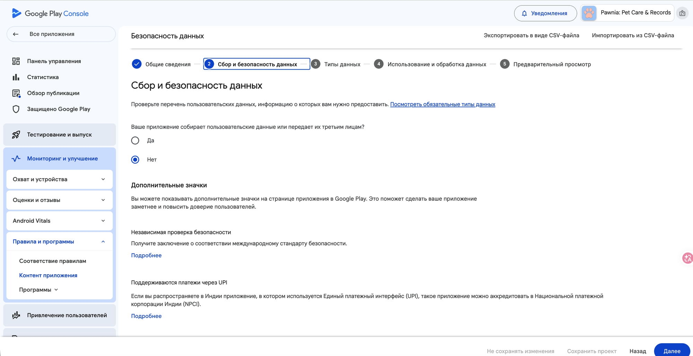
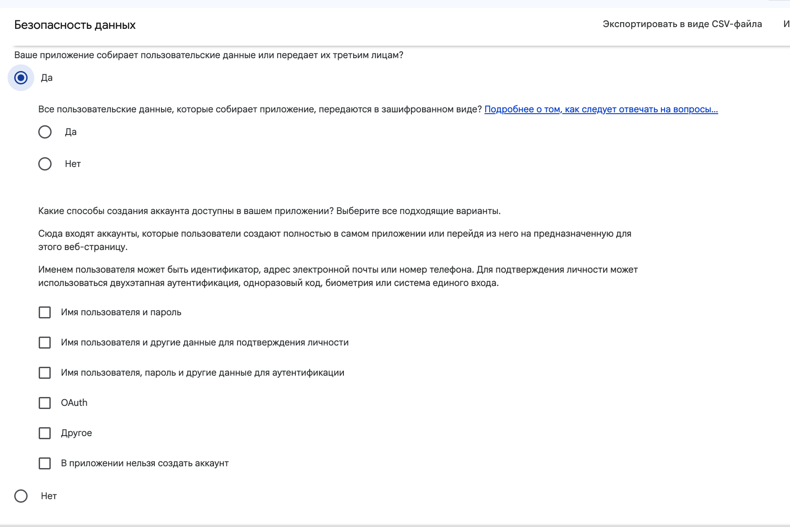
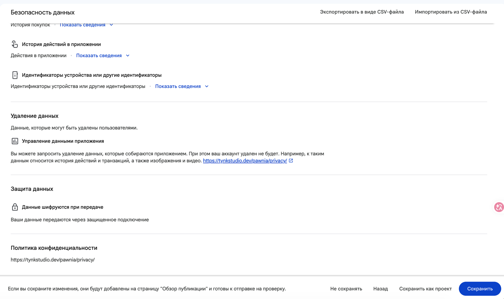

2.4 Безопасность данных (Data Safety)
Самая длинная декларация во всём мануале — аналог App Privacy у Apple, но устроена как визард из 5 шагов, а не как список переключателей на одной странице. На шаге 2.3 нажми «Настроить» у пункта «Безопасность данных».
Пять шагов визарда
Общие сведения → Сбор и безопасность данных (вопрос «собирает ли приложение данные вообще») → Типы данных (чек-листы по категориям: Местоположение, Личная информация, Финансовые сведения и т.д.) → Использование и обработка данных (для каждого выбранного типа — временная обработка, обязательность, цель) → Предварительный просмотр.

Контент приложения
Отсюда попадаешь в визард — тот же путь, что описан на шаге 2.1/2.3.
Шаг 2 из 5
Первый содержательный вопрос: собирает ли приложение данные/передаёт ли третьим лицам. Если ответ «Нет» — визард завершается здесь же, остальные шаги не нужны.
Документация по разделу безопасности данных →Способы создания аккаунта
На шаге 2 визарда отдельно спрашивают про способы регистрации в приложении — список чекбоксов плюс отдельный независимый переключатель «Нет» внизу. Это не то же самое, что сами типы данных (шаг 3 визарда).

«В приложении нельзя создать аккаунт»
Это один из чекбоксов в верхнем списке — выбирается, если в приложении нет регистрации вообще (как у Pawnia).
Отдельный переключатель «Нет»
Независимый от чекбоксов выше радио-вариант — по смыслу то же самое («нет способов создать аккаунт»), но это отдельный элемент формы, легко перепутать с чекбоксом выше.
Шаг 5: Предварительный просмотр
Финальная сводка перед сохранением: что собирается и передаётся, ссылка на удаление данных, подтверждение шифрования, ссылка на политику конфиденциальности. Именно на этом экране мы в своё время поймали чужую ссылку (от другого приложения команды) в поле «Удаление данных» — несовпадающие политики разных продуктов попадают сюда одинаково незаметно.

Ссылка на удаление данных
Отдельное поле от политики конфиденциальности ниже — легко оставить тут ссылку на другое приложение по ошибке, если копируешь шаблон. Проверяй отдельно.
Политика конфиденциальности
Должна совпадать с той, что указана в Контенте приложения (шаг 2.3) и с реальным текстом на сайте.
Сохранить / Сохранить как проект
«Сохранить как проект» — черновик, не отправляется на проверку. «Сохранить» фиксирует форму и возвращает в «Контент приложения» — само отправление на проверку происходит отдельно, на шаге 2.6.